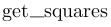

| Ограничение времени | 1.1 секунда |
| Ограничение памяти | 64Mb |
| Ввод | стандартный ввод или input.txt |
| Вывод | стандартный вывод или output.txt |
Напишите функцию , которая принимает на вход numpy-массив находит сумму квадратов положительных элементов одномерного массива.
| Ввод | Вывод |
|---|---|
1 -2 3 |
10 |
При сдаче этого задания выберите компилятор make2